발표 자료의 앱 시안(네이비 카드, 민트 포인트, 둥근 카드)과 로고를 기준으로 회원가입·초기 설정, 홈·러닝 준비 화면을 다시 그렸습니다. 지도는 OpenStreetMap 지도(© OpenStreetMap contributors)를 이미지로 저장해 넣었으며 시안과 맞춰 광안리 일대를 기준으로 했습니다.
건강 데이터를 거부해도 가입할 수 있습니다. 이 경우 오늘의 컨디션·준비도는 표시하지 않고, 대신 직접 입력하는 방식도 두지 않습니다. 준비도가 없어도 러닝·기록은 모두 쓸 수 있고, 상태별 표시(평가 가능·수집 중·오래된 데이터·권한 거부·워치 미연결)는 2.1 설명과 같습니다. 점수를 내는 데 필요한 데이터 조건·기간은 결정 필요 사항입니다.
평소 달리는 거리와 완주 시간·페이스 중 하나만 입력하면 나머지는 자동 계산됩니다. 이번 러닝의 목표는 3.1 추천 조건에서 따로 정합니다. 수준은 거리와 횟수가 모두 맞아야 고르는 항목이 아니라 더 가까운 쪽을 고르는 항목입니다. 첫 러닝 전 입력 구분: 꼭 필요한 것은 1.3 계정(아이디·비밀번호·전화번호)과 1.4 필수 동의입니다. 나중에 해도 되는 것은 건강 데이터 동의(선택)와 워치 연결(1.6w·1.7, ‘나중에 연결’ 있음)입니다. 1.5 닉네임·성별·생년월일과 이 화면의 러닝 수준·평소 페이스를 첫 러닝 전에 꼭 받아야 하는지는 결정 필요 사항이며, 지금은 기존대로 둡니다.
1.8과 같은 구성의 연결 완료 상태입니다. 상단 링은 배터리 82%와 권한 4/4, 워치는 컬러와 민트 받침으로 연결을 표시합니다. 권한 카드는 옆으로 넘겨 하나씩 확인하고, 하단 손잡이를 밀면 시작합니다.
1.7과 같은 구성의 끊김 상태입니다. 워치는 흑백에 코랄 받침, 화면에 ‘연결 끊김’을 띄우고, 하단 라벨에 배터리 ‘– –’를 표시합니다. 권한 카드는 1.7과 같은 아이콘 구성입니다. 심박수는 코랄 ‘권한 거부’, 워치에서 받는 수면·활동량은 회색 아이콘과 코랄 ‘연결 끊김’, 휴대폰 GPS인 위치는 ‘연결됨’으로 둡니다. 손잡이를 밀면 다시 연결합니다.
전화번호 → 인증번호 → 새 비밀번호를 한 화면에서 위에서 아래로 이어 채웁니다. 끝난 단계는 민트 체크로 접히고, 인증번호는 3분 안에 입력합니다. ‘변경하고 로그인하기’를 누르면 1.2 로그인으로 돌아갑니다.
인증번호가 틀리면 입력란을 코랄로 바꾸고 남은 시도 횟수를 함께 보여 줍니다. 5회 틀리면 인증번호를 다시 받아야 합니다.
내 프로필 사진을 배경으로 깔고 인사를 띄웁니다. 인사 바로 아래에 ‘오늘 컨디션 · 자동 평가’가 있습니다. 컨디션과 준비도는 워치·건강 데이터(수면·안정 심박·7일 부하)로 자동 평가한 결과이며 사용자가 고르지 않습니다. 건강 데이터 상태를 다섯 가지로 나눕니다. ① 평가 가능: 점수·컨디션을 보여 주고 추천에 준비도를 반영. ② 데이터 수집 중: 점수 대신 ‘데이터 모으는 중 · 점수 산출 전’, 추천은 수준·목표 기준. ③ 오래된 데이터: 마지막 평가일을 보여 주고 오늘 점수로 쓰지 않음, 다음 행동은 워치 동기화. ④ 권한 거부: ‘건강 데이터 권한 없음’, 다음 행동은 설정 > Health Connect. ⑤ 워치 미연결: ‘워치 미연결’, 다음 행동은 설정에서 워치 연결. ②~⑤에서도 러닝 시작·기록은 그대로 되고, 확정된 점수나 건강 기반 추천처럼 보이지 않게 합니다(상단 시연 버튼으로 전환). 점수 산출에 필요한 데이터 조건·기간, 오래된 데이터의 기준은 결정 필요 사항입니다.
알림함은 검토용 설계안입니다(제공 여부 미정). 확정된 반영 대상만 예시로 둡니다: 그룹런 시작 임박(발송 시점·횟수 미정), 크루 가입 승인·거절, 게시물 댓글, 그룹런 자체 취소, 팔로우 요청·승인. 오늘의 준비도 도착, 그룹런 참가·개인 참가 취소, 응답 마감 관련 알림은 보내지 않습니다. 좋아요 알림은 확정 목록에 없어 예시에서 뺐습니다(정책 미정). 각 알림을 누르면 관련 화면으로 갑니다.
받은 알림이 없으면 가운데에 빈 상태 안내만 두고 ‘모두 읽음’은 흐리게 잠급니다.
2.0M에서 ‘자유 러닝’을 고르면 나옵니다. 코스 없이 현재 위치에서 바로 출발하고, ‘러닝 시작’은 3초 카운트다운 후 4.2로 갑니다. 거리·시간·페이스는 0에서 시작해 달리는 동안 기록됩니다. ‘변경’은 2.0M으로 돌아갑니다. 목표 거리와 목표 페이스는 각각 선택 입력입니다. 없음·거리만·페이스만·둘 다 모두 시작할 수 있고, 빈 칸을 기본값으로 채우지 않습니다. 둘 다 넣었을 때만 예상 완주 시간을 계산해 따로 보여 줍니다(사용자 목표와 구분). 목표는 출발 전까지만 바꿀 수 있고 ‘러닝 시작’ 후에는 일시정지 중에도 고정됩니다. 거리 목표가 있을 때만 4.2에 남은 거리·진행 막대가 나옵니다.
코스 러닝의 페이스 플랜 화면입니다. 3.1b 카드 뒷면의 ‘코스 선택’을 누르면 옵니다. 지도 위 코스를 1km 구간으로 나눠 구간마다 추천 페이스를 띄웁니다. 경로 선은 구간별로 색 진하기가 다르며, 빠른 구간일수록 진한 민트, 느린 구간일수록 옅은 민트입니다(오른쪽 위 범례). 아래 카드에는 오늘의 전략만 두고, ‘러닝 시작’은 3초 카운트다운 후 4.2로 갑니다. 왼쪽 원형 버튼은 설정(8.1), 오른쪽 원형 버튼은 음악입니다. 연결한 서비스(멜론/Spotify) 표시가 붙고, 누르면 2.7 음악 카드가 뜹니다. 시작 버튼 위에 ‘비교 기록’(꺼짐·기록 없음·특정 기록 선택)과 ‘내 코스에 저장’(북마크)을 둡니다. 고른 비교 기록은 4.2에 그대로 표시됩니다. 목표는 출발 전까지만 바꿀 수 있습니다. 지도 위 안내 줄에 출발점까지 거리와 이동 안내를 보여 주고, 출발점에 오면 ‘출발점에 있어요’로 바뀝니다(시연 버튼). 현재 위치에서 바로 시작할 수 있는지, 출발점까지 가는 구간을 기록에 넣는지, 코스 진행률·비교 기록 계산을 언제 시작하는지는 결정 필요 사항입니다.
2.0·2.0F의 ‘러닝 시작’ 오른쪽 음악 버튼을 누르면 시작 화면 위에 뜹니다. 배경은 어둡게 깔고, 카드 바깥을 누르면 닫혀 시작 화면으로 돌아갑니다. 위쪽은 미니 플레이어(곡 정보·진행 바·이전/재생/다음), 오른쪽 위 톱니바퀴는 2.8 음원 선택입니다. 재생목록은 좋아요한 곡 · 최근 들은 곡 · 내 플레이리스트 · TOP100 순서로 위아래 스크롤합니다. 맨 아래 ‘멜론 열기’는 멜론 앱으로 넘어갑니다.
Spotify를 연결했을 때입니다. 재생목록은 내 플레이리스트만 보여 줍니다. 곡을 골라 재생하려면 Premium이 필요해서 목록 위에 안내를 둡니다. 맨 아래는 ‘Spotify 열기’.
2.7 톱니바퀴로 들어옵니다. 멜론 · Spotify · 음악 없음 중 하나를 고르고, 서비스마다 연결 상태(연결됨 / 앱 설치 필요 / 로그인 필요 / 권한 필요)를 붙입니다. 연결되지 않은 서비스는 오른쪽 버튼으로 바로 해결합니다. 뒤로 가면 2.7. ‘음악 없음’을 고르면 시작 화면의 음악 버튼이 음표 아이콘으로 바뀌고(2.0N 예시) 러닝 중 미니 플레이어를 띄우지 않습니다(4.2N 예시).
멜론 앱은 있지만 재생 제어 권한을 주지 않았거나, Spotify 앱이 설치되지 않은 경우입니다. 각각 ‘허용’ / ‘설치’로 해결합니다.
기준 위치·목표 거리·완주 시간·환경을 고르고 ‘코스 추천 받기’로 3.1b 추천 코스 목록에 갑니다. 목표 거리는 1–21km를 0.5km 단위로 드래그하고, 완주 시간에 맞춰 페이스가 바로 다시 계산됩니다. ‘준비도’ 표시는 건강 데이터가 평가 가능 상태일 때만 추천에 반영되고, 그 밖의 상태(수집 중·오래된 데이터·권한 거부·워치 미연결)에서는 ‘준비도 미반영’으로 바뀌어 수준·목표·위치·환경으로만 추천합니다. 추천 결과가 없거나 추천을 불러오지 못하면 이 화면에 안내를 띄우고 입력한 조건을 그대로 둡니다(시연 버튼).
3.1에서 ‘페이스’를 누른 상태입니다. 왼쪽 칸에 목표 페이스(분:초)를 직접 입력하면 오른쪽 완주 시간이 목표 거리에 맞춰 자동 계산됩니다. ‘완주 시간’을 누르면 반대로 바뀝니다.
앞면·뒷면 모두 ‘코스 선택’ 버튼이 있습니다. 카드의 다른 곳을 한 번 누르면 뒤집히며 뒷면에 코스 정보(유형·환경·거리·예상 시간·고도·구간 고도·추천 이유)가 나옵니다. 뒷면의 ‘코스 선택’을 누르면 바로 그 코스로 2.0에 들어가고(그룹런 만들기에서 왔으면 6.8로 돌아감), 뒷면의 다른 곳을 누르면 다시 앞면으로 뒤집힙니다. 옆 카드로 넘기면 뒤집힌 카드는 앞면으로 돌아옵니다. 3.1에서 ‘코스 추천 받기’를 누르면 나옵니다. 추천 코스 4개를 지도 카드로 보여 주고, 좌우로 드래그하면 다음 카드가 가운데로 오며 양옆 카드는 작게 비칩니다. ‘조건 변경’은 3.1로 돌아갑니다. 추천 결과가 없거나 불러오지 못하면 이 화면으로 넘어오지 않고 3.1에서 안내하며, 입력한 조건은 그대로 둡니다.
2.0에서 미리 본 코스를 밝은 지도 위에 이어서 보여 줍니다. 달린 구간은 민트 네온선, 남은 구간은 점선이고, 내 위치는 민트 점입니다. 지도는 끌어서 옮길 수 있습니다. 위쪽은 지도가 보이고 아래로 내려오며 흰 그라데이션이 깔리고, 그 위에 내 페이스와 목표 페이스 범위 바(느림–빠름, 목표 ±10″)를 둡니다. 경쟁 모드면 코스 이름 아래에 기록 차이 한 줄을 둡니다. 버튼은 일시정지 하나입니다. 음악을 연결했으면 맨 아래에 한 줄 미니 플레이어(곡 제목·이전/일시정지/다음)를 두어 운동 수치를 가리지 않게 합니다. 일몰 후에는 4.2N. GPS 신호가 끊기면 시간(워치가 있으면 심박)은 계속 기록하고 거리·페이스는 신호가 돌아오면 이어서 보정합니다. 러닝 중 앱이 종료되면 다시 열 때 기록을 4.3 일시정지 상태로 복구합니다(시연 버튼).
4.2 러닝 진행과 같은 화면의 완주 상태입니다. 코스 윤곽선이 모두 민트로 채워지고, 평균 페이스를 민트로 가장 크게 두고, 시간·거리·평균 심박·케이던스와 목표·비교 기록 결과 한 줄을 보여 줍니다. ‘기록 보기’는 5.2 기록 상세, ‘내 코스에 저장’은 이 코스를 개인 북마크로 저장/해제합니다(4.6 수동 등록은 없앴음). ‘기록 공유’는 이 결과를 붙인 7.3 기록 공유 화면으로 갑니다. 상단 제목은 개인 종료와 목표 완주 여부를 따로 보여 줍니다. 결과가 보이는 것과 저장 완료는 다르며, 위쪽 표시가 ‘기록 저장 중 → 휴대폰에 저장됨 · 보내는 중 → 기록 저장됨 · 동기화 완료’로 바뀝니다. 전송에 실패하면 ‘휴대폰에 보관됨 · 전송 대기(다시 시도)’, 휴대폰 저장 자체가 실패하면 ‘휴대폰에 저장하지 못했어요(다시 저장)’로 따로 표시합니다. 휴대폰에 저장된 기록은 전송 전이라도 5.1 목록에 들어갑니다. 전송 대기 기록은 5.1 목록의 해당 기록에서도 다시 보낼 수 있고, 다음 러닝을 시작해도 대기 기록은 따로 남습니다. 폰·워치 중복 기록의 병합 기준, 미동기화 상태에서 다음 러닝을 시작하는 규칙은 결정 필요 사항입니다.
코스 없이 시작한 자유 러닝(2.0F)을 끝내면 나옵니다. 상단에 개인 종료와 목표 결과(목표 완주/미달성/목표 없음)를 함께 표시합니다. 세 가지를 나눕니다. ① 기록 저장: 끝낸 러닝은 내 기록(5.1)에 저장되고 나만 봅니다. ② 내 코스 저장: ‘내 코스에 저장’을 눌러야 3.1c에 들어가며 나만 다시 씁니다. ③ 게시물 경로 노출: ‘코스도 함께 공유’는 그 게시물에서 경로·출발/도착·코스 설명·코스 저장을 보여 줄지만 정합니다. ‘자동 반영’은 등록 요청 없이 경로가 코스 데이터에 들어간다는 뜻이며 공용 코스 등록이 아닙니다. 반영된 경로를 다른 사람 추천에 쓰는지, 게시물 공유 설정과 관계가 있는지는 정해지지 않아(결정 필요) 공개·비공개 어느 쪽으로도 표시하지 않습니다. 자동 반영됐다고 내 코스에 저장되지는 않습니다. 결과가 보이는 것과 저장 완료는 다르며, 위쪽 표시가 ‘기록 저장 중 → 휴대폰에 저장됨 · 보내는 중 → 기록 저장됨 · 동기화 완료’로 바뀝니다. 전송에 실패하면 ‘휴대폰에 보관됨 · 전송 대기(다시 시도)’, 휴대폰 저장 자체가 실패하면 ‘휴대폰에 저장하지 못했어요(다시 저장)’로 따로 표시합니다. 휴대폰에 저장된 기록은 전송 전이라도 5.1 목록에 들어갑니다. 별명은 3.1c에서 붙입니다. 위치 없이 시간만 기록했다면 거리·페이스·경로를 비워 두고 코스 반영·저장도 하지 않습니다. 워치가 없으면 심박은 ‘– –’입니다. 자동 반영의 시점·경로 유효 기준·중복 처리는 아직 정해지지 않았습니다.
월 요약(총 거리·총 시간·평균 페이스) 아래에 전체·개인·그룹런 탭을 두고, 기록을 주 단위로 묶어 보여 줍니다. 지난 그룹런은 여기서만 봅니다. 라벤더 ‘그룹런’ 표시가 붙고, 누르면 6.7 그룹런 결과로 갑니다. 목표에 못 미친 기록은 코스 아이콘과 페이스를 코랄로 표시합니다. 스크롤하면 배경이 흐려집니다. 휴대폰에 저장된 기록은 전송 전이라도 목록에 들어가고, 보내지 못한 기록에는 기록마다 ‘전송 대기 · 다시 보내기’가 붙습니다(누른 기록만 다시 보내며 기록이 늘지 않음). 맨 위 줄은 대기 건수만 알려 줍니다(워치 기록은 워치와 다시 연결되면 보냄). 기록을 누르면 그 기록의 5.2로 갑니다.
5.1 전체 기록이나 4.5 러닝 결과의 ‘기록 보기’로 들어오며, 누른 그 기록의 거리·시간·페이스·날짜·목표 결과를 보여 줍니다. 심박·케이던스 탭은 그 기록에 측정값이 있을 때만 보입니다. 경로 지도, 목표 달성, AI 조언, 구간 그래프를 보여 줍니다. 그래프는 위 탭에서 페이스 · 심박 · 케이던스를 골라 봅니다. 페이스는 목표선, 심박·케이던스는 평균선을 점선으로 두고, 세 그래프 모두 최고점을 표시합니다. 아래 버튼은 내 코스에 저장(북마크 · 누를 때마다 저장/해제) · 기록 공유(이 기록을 붙인 7.3) · 닫기(들어온 화면)입니다. 기록 저장(나만 봄) · 내 코스 저장(나만 재사용) · 게시물 경로 노출(그 게시물에서 코스 공유를 켠 경우)은 서로 다릅니다. 자동 반영 경로를 다른 사람 추천에 쓰는지는 결정 필요 사항입니다. 위치 없이 시간만 기록한 러닝은 경로가 없어 코스 반영·저장이 되지 않습니다.
그룹 탭에 들어오면 바로 보이는 첫 화면입니다. 위 탭은 ‘내 크루 | 크루 모집’ 두 개이고, 누르거나 좌우로 밀어 6.1로 갑니다. 출발 시간이 다가온 그룹런은 맨 위에 한 줄짜리 민트 테두리 카드로 고정되고 ‘대기방 입장’으로 6.5 출발 준비에 들어갑니다. 그 아래는 가입한 크루별로 한 칸씩 묶은 패널이고, 화살표로 접고 펴며, 그룹런 카드에서 ‘참가하기’를 누르면 참가자로 들어가고, 다시 누르면 참가가 취소됩니다(참가·참가 취소만 있고, 불참 응답은 없어요). 크루 이름은 6.2, 옆 + 는 6.8 그룹런 만들기로 갑니다. 가입 신청만 하고 승인 전인 크루는 ‘승인 대기’ 표시와 함께 흐리게 둡니다.
내 크루에서 만든 그룹런 하나의 상세입니다. 날짜·시간, 만나는 곳(장소 이름과 주소), 코스를 한 카드에 모으고, 코스가 없는 자유 러닝이면 코스 칸에 ‘자유 러닝 · 40분’처럼 목표만 보여 줍니다. 아래 ‘참가하기’로 참가자에 들어가고(참가 후에는 ‘참가 취소’로 바뀜), 거리는 그룹런 거리이고, 공동 페이스·시간은 현재 참가자 기록으로 낸 예상값입니다(확정값 아님). 참가자가 바뀌어 예상값이 달라지면 위에 이전→현재 값과 함께 ‘예상 공동 페이스가 바뀌었어요’ 안내가 뜨고, 같은 화면의 ‘참가 취소’로 참가 여부를 다시 정할 수 있습니다(시연 버튼). 변경을 알림으로도 보낼지는 결정 필요 사항입니다. 내가 만든 그룹런은 출발 30분 전이 되면 아래 버튼이 ‘대기방 입장 · 그룹장’으로 바뀝니다(그 전에는 열리는 시각 안내, 시간 이동은 시연 버튼). 당일 참가한 사람만 6.5 출발 준비로 들어갑니다.
대기방 · 내 준비도 · 공동 페이스 확인을 한 화면으로 합쳤습니다. 상태는 참가 신청(6.4에서 참가) → 대기방 입장(이 화면) → 준비 완료(버튼) → 실제 출발로 나뉩니다. 준비 완료는 운동 시작이 아닙니다. 출발은 이 그룹런의 그룹장만 하고, 그룹장이 출발하면 준비 완료한 멤버(그룹장 포함)에게 ‘그룹장이 출발했어요 · 내 기록이 함께 시작돼요’ 3·2·1 카운트다운이 뜬 뒤 각자의 기록이 시작되어 6.6 진행으로 넘어갑니다. 준비하지 않은 멤버에게는 ‘내 기록은 시작되지 않았어요’가 뜨고 대기방에 남습니다. 공동 페이스는 출발 직전 대기방 참가자 기준으로 다시 제안한 값이며, 참가 때 예상값과 다르면 위에 이전→현재 값을 보여 줍니다. 그룹장이 출발할 때 이 화면의 값(공동 페이스·거리·코스 또는 자유 러닝)이 그대로 출발 목표가 되어 6.6·워치·6.7에 쓰입니다. 내가 만든 그룹런은 출발 30분 전부터 6.4에서 들어오고, 만든 사람이 그 그룹런의 그룹장입니다. 다른 멤버의 준비도는 공개 범위가 정해지지 않아 보여 주지 않고 준비 상태만 표시합니다. 미준비·미입장·백그라운드·연결 끊김 멤버의 처리, 지각 참가, 재입장, 그룹장 부재는 결정 필요 사항입니다.
4.2N과 같은 구성입니다. 어두운 지도 위에 달린 구간은 민트 네온, 남은 구간은 점선으로 그리고, 나와 멤버(은서·서연·성윤) 위치를 점과 이름표로 보여 줍니다. 그 아래 내 페이스, 그룹 목표 페이스 바를 둡니다. 위쪽에는 순위보다 그룹 범위 안인지와 선두–후미 간격 안내를 먼저 둡니다. 목표 바에는 출발 때 확정한 공동 목표를 두고, 운동 중 안내 페이스가 바뀌면 ‘지금 안내 · 출발 목표’를 함께 보여 줍니다(워치 9.7·9.2c도 같은 값). 자유 러닝 그룹런은 코스 없이 진행됩니다. ‘그룹 범위 안’의 판정 기준과 벗어났을 때의 안내는 결정 필요 사항입니다. 일시정지를 누르면 6.6c 일시정지로 가고, 거기서 종료하면 6.7 결과로 갑니다.
멤버 중 한 명의 부담이 커지면 위쪽에 코랄 알림 카드가 뜹니다. 부담이 오른 멤버 수(이름·준비도 없이)와 곧 바뀔 안내 페이스를 알려 주고(출발 목표는 그대로), 몇 초 뒤 6.6 화면으로 돌아갑니다.
6.6에서 일시정지 버튼을 누르면 들어옵니다. 종료(1초 길게)를 누르면 ‘내 운동 종료’가 기본이고 내 기록만 개인 종료됩니다. 실제로 출발한 다른 멤버가 달리고 있으면 그룹은 계속되고, 마지막 출발자가 끝나면 자동으로 전체 종료됩니다. 이 그룹런의 그룹장에게만 ‘그룹 전체 강제 종료’가 확인 단계와 함께 보이며, 크루장이라는 이유로는 보이지 않습니다. 목표는 바뀌지 않으며, 코칭 음성은 끄거나 켤 수 있습니다.
6.6 위 탭에서 ‘위치·간격’을 누르면 들어옵니다. 그룹런은 함께 달리는 협동형이라 위쪽에 그룹 범위 안인지와 선두–후미 거리를 먼저 두고, 아래에 실제 출발한 멤버를 앞에서부터 정렬해 나와의 거리·페이스를 보여 줍니다. 순위 번호 대신 선두·후미만 표시하고, 순위 경쟁 문구는 쓰지 않습니다. 그룹 범위 판정 기준과 이탈 시 안내는 결정 필요 사항입니다. ‘페이스’ 탭은 6.6으로 돌아갑니다.
개인 종료 후 바로 볼 수 있습니다. 위쪽에 그룹 상태(진행 중 · 자동 전체 종료 · 그룹장 강제 종료)를 두고, 진행 중이면 함께 달린 거리·그룹 평균을 ‘집계 중’으로 둡니다. 멤버마다 개인 종료/달리는 중/미출발과 목표 완주 여부를 따로 표시합니다. 목록은 종료 상태 → 완주 여부 → 기록 시간 순으로 정렬한 것이며 순위가 아니어서 번호를 붙이지 않습니다. 완주는 출발 때 확정한 목표로 판정합니다(자유 러닝은 ‘목표 없음’). 참가 신청만 하고 출발하지 않은 사람은 집계와 종료 판정에서 빠집니다. 강제 종료는 그 시점까지의 기록만 반영하고 완주로 바꾸지 않습니다. 지각 참가·재입장·그룹장 부재 정책은 미정입니다. 하단 안내처럼 이번 내 기록은 5.1 내 기록의 그룹런 탭에 남고, ‘내 그룹런 기록 공유’는 이 기록을 공유하는 7.3 기록 공유로 이어집니다.
6.0의 ‘전체 보기’로 들어옵니다. 위치 설정 칸을 따로 두지 않고 검색창 하나로 크루 이름과 지역(예: 광안리, 민락)을 함께 찾습니다. 검색 전에는 ‘내 근처’ 칩이 켜져 있어 내 위치 기준 3km 안의 크루가 먼저 보입니다. 카드마다 모집 상태·인원, 소개 한 줄, 멤버, 지역을 보여 주고, 정원(기본 200명)이 찬 크루는 ‘정원 마감’으로 흐리게 두고, 누르면 6.2f로 갑니다. ‘내 크루’ 탭은 6.0으로 갑니다. 위 탭은 6.0 내 크루와 같이 쓰고, 오른쪽으로 밀면 내 크루로 갑니다. 목록 맨 아래 ‘크루 만들기’는 6.3으로 갑니다.
크루 모집 글입니다. 지역·인원을 위에 두고 소개글과 구성원(크루장 표시, 평균 페이스)을 이어 보여 줍니다. 가입 방식은 크루 설정을 따릅니다. 기본은 승인제로, ‘가입 신청’ 후 6.2b 신청 완료 상태가 되고 크루장이 6.2a에서 승인하면 멤버가 됩니다. 크루장이 바로 가입으로 바꾼 크루는 신청하면 바로 멤버가 됩니다.
6.2 ‘가입 신청’을 누르면 뜨는 안내입니다. ‘내 크루로’를 누르면 6.0으로 가고, 신청한 크루는 승인 대기 카드로 보입니다.
6.2m의 ‘가입 신청’에서 들어옵니다. 승인하면 인원이 1명 늘고 신청자 알림(2.9)에 ‘가입이 승인됐어요’가 쌓이며, 신청자의 6.0에서 ‘승인 대기’가 멤버로 바뀝니다. 시연은 상단 분기 버튼으로 크루장·신청자 시점을 바꿉니다.
크루장이 자기 크루 상세를 열면 인원 아래에 ‘크루 관리’ 칸이 붙습니다. ‘정원 제한’을 끄면 기본 정원 200명이 적용되고, 켜면 정원을 직접 입력합니다(최대 200명). 현재 인원 / 정원을 막대와 함께 보여 줍니다. 크루장이 아닌 멤버에게는 이 칸이 보이지 않습니다.
6.0 내 크루에서 들어옵니다. ‘코스 러닝 / 자유 러닝’을 고르면 그룹런에 그대로 저장됩니다. 자유 러닝이면 코스 행이 사라지고 코스 없이 만나는 곳에서 출발합니다. 만나는 곳·날짜·시간을 정해 만듭니다. 공동 페이스는 직접 입력하지 않습니다. 모집 중에는 그때까지의 참가자 기록으로 낸 예상값을 6.4에 보여 주고, 출발 직전 6.5에서 대기방 참가자 기준으로 다시 제안합니다. 기록 없는 참가자·참가 취소·출발 직전 참가자 변경을 계산에 어떻게 넣을지는 결정 필요 사항입니다. 새 그룹런 생성 알림은 확정된 알림 목록에 없어 정책 미정입니다(이 화면에서 알림을 보냈다고 표시하지 않음). 그룹런 시작 임박 알림은 반영 대상이지만 발송 시점·횟수는 미정입니다.
지도를 움직이면 가운데 핀 아래의 주소가 바뀝니다. 위 검색창으로 장소나 주소를 찾을 수 있고, 오른쪽 버튼을 누르면 내 위치로 돌아갑니다.
아이디는 사진 위에 얹고, 사진 아래에는 글만 둡니다. 사진은 4.5 러닝 결과 화면이 그대로 올라가고. 새 글은 4.5의 ‘기록 공유’에서만 씁니다. 저장 아이콘을 누르면 그 코스가 3.1c 저장한 코스에 담깁니다. 왼쪽 위 ‘부산 ▾’를 누르면 도시 목록 시트(서울·대전·부산·광주·구미…)가 열리고, 처음엔 내 위치의 도시가 선택됩니다. 오른쪽 ‘전체 / 팔로잉’ 칩으로 범위를 고르며, 팔로잉은 내가 팔로우한 러너의 기록만 보여줍니다. 저장(북마크) 아이콘은 게시물에 연결된 러닝의 코스를 3.1c 내 코스에 저장합니다.
7.1과 같은 피드를 다른 탭(홈·러닝·그룹)과 같은 어두운 바탕으로 맞춘 안입니다.
7.2 오른쪽 위 ··· 을 누르면 뜹니다. 수정은 7.3e, 삭제는 7.2c 확인으로 갑니다.
되돌릴 수 없어 한 번 더 확인합니다. 취소는 7.2로, 삭제는 7.1 커뮤니티로 갑니다.
4.5에서 ‘기록 공유’나 5.2 기록 상세의 ‘기록 공유’를 누르면 열리고, 누른 그 기록이 붙습니다. 작성 취소(뒤로)는 들어온 화면으로 돌아갑니다. 게시에 실패하면 쓴 글과 공유 설정을 그대로 두고 ‘게시’를 다시 누를 수 있습니다. 아이디·코스 아래에 4.5 결과 화면이 사진으로 자동으로 들어가고, 글만 쓰면 됩니다. ‘게시’를 누르면 7.1 피드 맨 위에 올라갑니다. 게시물별 공개 범위는 없고, 볼 수 있는 사람은 계정 공개 설정을 따릅니다. ‘코스도 함께 공유’를 끄면 경로·출발/도착·코스 설명·코스 저장이 미리보기·피드·상세에서 모두 사라집니다. 결과 수치·측정일·목표 결과·심박/케이던스는 붙은 기록 그대로 게시되며(측정값이 없는 기록은 ‘– –’), 다른 기록이나 이전 게시물 값을 쓰지 않습니다. ‘코스도 함께 공유’는 이 게시물에서의 경로 노출만 정합니다. 자동 반영 경로를 다른 사람 추천에 쓰는지와의 관계는 결정 필요 사항입니다.
7.2b ‘게시물 수정’으로 들어옵니다. 글과 코스 공유 여부를 고치고 ‘저장’하면 7.2로 돌아갑니다.
피드에서 프로필 사진을 누르면 열립니다. 공개 계정이면 누구나 공유한 러닝 결과(게시물로 올린 것만)를 볼 수 있고, 팔로우를 누르면 바로 팔로잉이 됩니다. 비공개 계정이면 ‘팔로우 요청 → 요청됨(대기) → 승인 후 팔로잉’ 순서이고, 승인 전에는 이름·사진·팔로워 수만 보이고 게시물·요약은 보이지 않습니다(보여줄 최소 항목은 설계안). 요청됨을 다시 누르면 요청을 취소합니다. 맞팔로우 조건은 없습니다. 원본 러닝 기록 목록은 계정 공개·팔로워 승인과 관계없이 다른 사람에게 보이지 않습니다.
7.4b 내 프로필의 ‘프로필 수정’으로 들어옵니다. 사진·닉네임·성별·생년월일·러닝 수준을 고치고, ‘기본 목표 · 평소 페이스’를 누르면 1.6과 같은 입력 화면에서 바꾼 뒤 ‘저장’으로 이 화면에 돌아옵니다. 바꾼 값은 다음 러닝부터 기본값이 되고 진행 중인 러닝의 목표는 바뀌지 않습니다. 기록에 따라 자동으로 바꾸는 기준은 결정 필요 사항입니다. 생년월일은 가입(1.5)과 같게 맞췄으며, 코칭에 실제로 쓰는 정보가 생년월일인지 연령대인지는 결정 필요 사항입니다. 코칭·기기·공개 범위·위치·알림은 8.1 설정에서 바꿉니다. 저장하면 7.4b로 돌아갑니다.
설정만 모은 화면입니다. 항목은 개인 설정 테이블(음성 코칭·BPM 가이드·그룹런/커뮤니티 알림·위치 수집 모드·계정 공개 여부)에 맞췄습니다. 러닝 코칭·기기·계정 공개 범위(공개 계정 / 비공개 계정)·위치 기록·알림과 로그아웃·회원탈퇴(8.4)가 이어집니다. ‘코칭 음성 알림’은 4.3·6.6c 일시정지의 ‘코칭 음성’과 같은 설정이라 어느 쪽에서 바꿔도 함께 바뀌고, 목표·안내 페이스는 바뀌지 않습니다. 안내 강도를 단계로 낮추는 조작은 없으며 필요 여부는 결정 필요 사항입니다. 기본 목표와 평소 페이스는 8.2 프로필 수정에서 바꿉니다. 계정 공개 범위는 워치 연결과 관계없이 같은 설정입니다. 비공개에서 공개로 바꾸면 대기 중인 유효한 팔로우 요청이 모두 자동 승인됩니다(자동 승인 시 알림 방식은 미정).
8.1 설정 맨 아래 ‘회원탈퇴’로 들어옵니다. 지워지는 정보를 개수와 함께 먼저 보여 주고, 크루장인 크루가 있으면 코랄 박스로 크루장이 넘어간다고 알립니다. 동의에 체크해야 ‘탈퇴하기’가 켜지고, 누르면 8.5 비밀번호 확인으로 가고, 비밀번호가 맞으면 8.6 탈퇴 완료로 갑니다.
8.4에서 ‘탈퇴하기’를 누르면 들어옵니다. 비밀번호가 맞으면 8.6 완료로, 틀리면 입력칸 아래에 오류 문구가 나옵니다. 프로토타입에서는 8자 미만을 입력하면 오류 상태가 보입니다. 뒤로·취소는 8.4로 갑니다.
앱에서 정한 모드·목표·안내 페이스·비교 기록을 그대로 받아 시작합니다. 워치에서 목표·코스를 다시 입력하지 않습니다. 그룹런이면 ‘그룹런’과 공동 페이스가 표시됩니다. 휴대폰 ‘러닝 시작’과 워치 ‘시작’ 중 어느 쪽을 눌러도 둘 다 시작됩니다. 그룹런에서는 휴대폰 6.5의 준비 완료 상태를 따르며, 그룹장이 출발하면 휴대폰과 같은 3초 카운트다운 뒤 함께 시작합니다. 준비하지 않은 멤버의 워치는 시작하지 않습니다(이후 합류 방식은 결정 필요).
가장자리 링이 거리 진행률입니다. 리듬은 손목 진동으로 172 BPM을 칩니다. 좌우로 넘기면 페이스 코칭(9.5)·기록 비교(9.6) 페이지가 나옵니다. 그룹런에서도 같은 화면을 ‘나의 운동 현황’으로 씁니다.
발표 자료의 그룹 모드 예시(5′40″ → 5′55″, 간격 180m)를 옮겼습니다. 부담이 오른 멤버는 이름 없이 ‘멤버 1명’으로 표시합니다. 개인 준비도와 부담 원인을 다른 참가자에게 어디까지 보여 줄지는 결정 필요 사항입니다.
공동 안내 페이스는 모두 같고 BPM은 내 보폭·케이던스에 맞춥니다. 출발 때 확정한 공동 목표와 지금 안내 페이스는 휴대폰 6.6과 같은 값입니다. 페이스 변경·격차 알림은 9.2c 오버레이로 뜹니다.